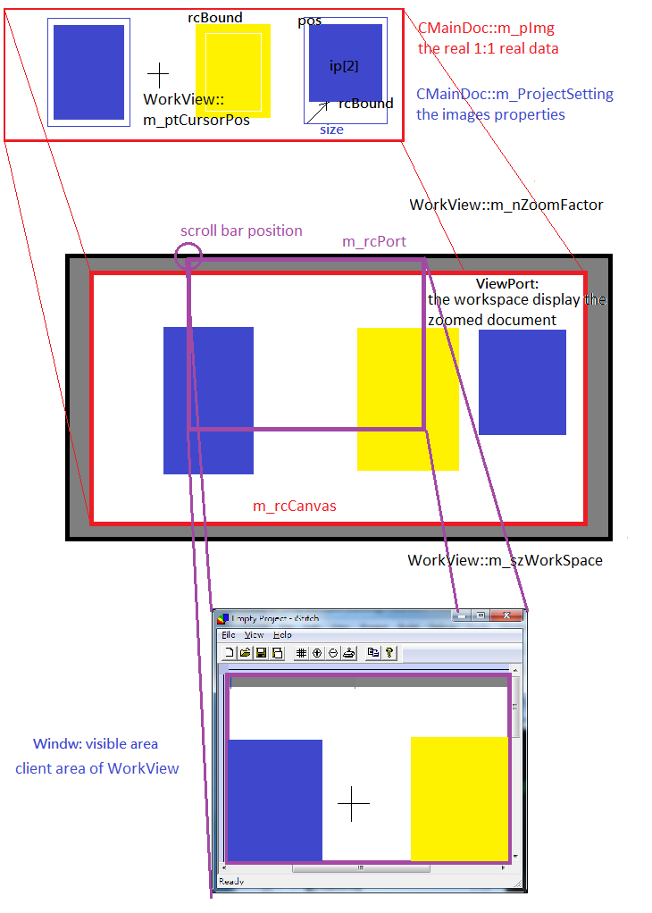

iStitch
0.2
Image stitching tool
Introduction
Purpose
This application is designed as a tool for images stitching
Application Architecture
DOC, ViewPort and Window Relationship

CMainDoc::m_pImg
the stitched image.
Generated by
1.8.14

 1.8.14
1.8.14